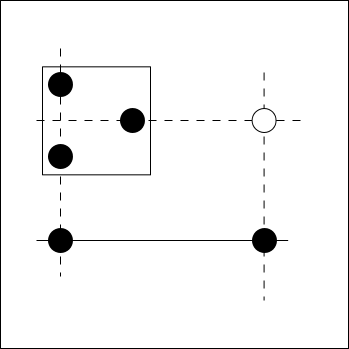

EmptyRectangle
For the description of EmptyRectangle, use cell-to-cell link and
ConnectedCells.
The following figure shows a block(□) of EmptyRectangle, a cell arrangement(●) in the block,
and a relationship pattern (solid line: strong link, dashed line: weak link).
If the cell(○) is true, due to a direct relationship and a strong link,
any cells(●) in the block will be false.

The analysis algorithm of EmptyRectangle is as shown in the above figure.,
- Select digit.
- Select block.
- Selecte the cell that becomes the axis in the block.
- Confirm that ER can be created in the block except for row and column of axis cell.
- Look for strong links outside the block.
- Find the cell in the axis of the block, the position forming a rectangle with the strong link.
Here is an example of EmptyRectangle. All different EmptyRectangles on the same scene of the same problem.
The bottom center is the same scene of the same problem, but the algorithm applied is Skyscraper.
Although applying different algorithms, candidates are excluded in the same cell as the upper center.
825.3....3..8.7....1.6..8..4..32..1..3..1..7..9..74..3..3..1.2....7.5..1....6.954
EmptyRectangle C# program
EmptyRectangle analysis program encodes the above algorithm as it is.
public partial class NXGCellLinkGen: AnalyzerBaseV2{
public bool EmptyRectangle( ){
Prepare();
CeLKMan.PrepareCellLink(1); //Generate strongLink
for( int no=0; no<9; no++ ){ //Focused Number
int noB = 1<<no;
for( int bx=0; bx<9; bx++ ){ //Focused Block
int erB=pBDL.IEGetCellInHouse(bx+18,noB).Aggregate(0,(Q,P)=>Q|(1<<P.nx));
if(erB==0) continue;
for( int er=0; er<9; er++ ){//Focused Cell in the Focused Block
int Lr=er/3, Lc=er%3; //Block local Row and Column
int rxF = 7<<(Lr*3); //7=1+2+4
int cxF = 73<<Lc; //73=1+8+64
if((erB&rxF)==0 || erB.DifSet(rxF)==0) continue;//Row Lr(Row Cndition Check)
if((erB&cxF)==0 || erB.DifSet(cxF)==0) continue;//Column Lc(Column Cndition Check)
if(erB.DifSet(rxF|cxF)>0) continue;//Row Lr and Column Lc(ER Cndition Check)
int r1 = bx/3*3+Lr; //Convert to Absolute Row
int c1 = (bx%3)*3+Lc; //Convert to Absolute Column
foreach( var P in HouseCells[9+c1].IEGetUCeNoB(pBDL,noB).Where(Q=>Q.b!=bx) ){
foreach( var LK in CeLKMan.IEGetRcNoBTypB(P.rc,noB,1) ){
UCell Elm=pBDL[r1*9+LK.UCe2.c];
if(Elm.b!=bx && (Elm.FreeB&noB)>0){//There is a Number that can be excluded
.
. (Solution report code)
.
return true;
}
}
}
foreach( var P in HouseCells[0+r1].IEGetUCeNoB(pBDL,noB).Where(Q=>Q.b!=bx) ){
foreach( var LK in CeLKMan.IEGetRcNoBTypB(P.rc,noB,1) ){
UCell Elm=pBDL[LK.UCe2.r*9+c1];
if(Elm.b!=bx && (Elm.FreeB&noB)>0){//There is a Number that can be excluded
.
. (Solution report code)
.
return true;
}
}
}
}
}
return false;
}
}